08/02/25
ということで、テレビに出てプロと麻雀対局をしてまいりました。
モンドホームページへいって「マーチャオCUP」の番組をチェーック！
放送日は以下のとおりです。
第一話 3月1日20時〜
第二話 3月8日20時〜
第三話 3月15日20時〜
第一話 3月2日11時〜
第二話 3月9日11時〜
第三話 3月16日11時〜
第一話 3月3日14時〜
第二話 3月10日14時〜
第三話 3月17日14時〜
え〜と、経緯を言いますと。
フリー雀荘チェーン「マーチャオ」
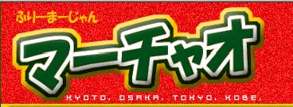
のエロイエライ方が主催で、
・麻雀プロ２名
・女流２プロ名
・芸能人２名
・ネット雀士２名
での異種格闘技戦をやろう、ということになったのだ。
とりあえず私が「顔出しはやだなぁ」とゴネていたら、製作会社から「美術担当に凸のお面作らせますよ」との声。
なんてステキ・・・さすがテレビ。
金かかってるな。
どの程度、
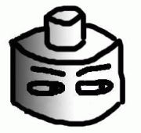
このイメージに近いリアルな凸お面ができるのかな！！
ワクワク。
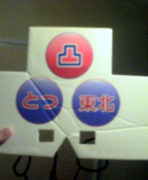
面。（完成ヴァージョン）
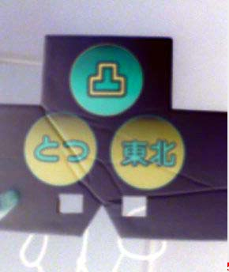
こっ・・・これをかぶるのか――――――――――――――！！
おい！ 製作会社の「美術」！
誰がこんなシュールレアリズムなやつを作れと！
ダンボール切ってきましたよ、ダンナ、みたいな完成度やんけ！！
ドラクエのアイテムやったら「はずかしいおめん」とかの名前やよこれ！
この面をかぶって参加する雀士は、決してネット麻雀のカリスマなどではない。
単に MAN in MEN でしかない。
しかも、もう一人のネット雀士（MJで全国ランクで最強、神と名を馳せた）「教室生ヨウ」氏は、普通に顔を出している。
つまり私は、「なぜ面をつけているのかまでは存じないが、恥ずかしい人」、あるいは、「見ているこっちが赤面しちゃうような面をつけた男」でしかないのだ。
はめられた―――――――――――――！！！
ともあれ、対局相手を紹介しよう！
まずは女流から。
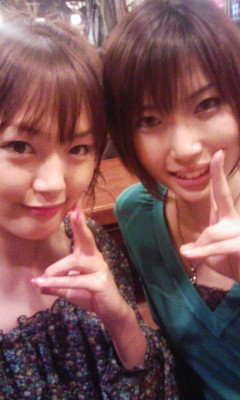
向かって左が 成瀬朱美プロ（blog）。右が、上田唯プロ。
ううむお二人とも美人で・・・思わず「上田プロだワン！」と言いそうになりました（謎）
芸能人からは麻雀界ではおなじみの坂上忍氏、
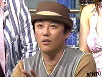
それから、アンジャッシュの児嶋氏
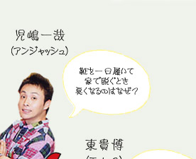
が参戦。（※写真はネットから拾ったものです。著作権法上の問題があればご指摘ください。ただちに削除します）
個人的には、アンジャッシュが大好きで。ピーポー君のネタとか最高。
昔からチェックしまくっていたアンジャッシュと待ち時間とか普通にしゃべってしまい、緊張してしまって、何話したか覚えてねぇ(笑)
もっとちゃんとボケたかった！！！（涙）
前回のプロとの公開対局では、50人を超える観客がいる中、対局中に緊張してしまってプルプル震えた私だが(笑)、今回は待ち時間から真っ白だったわけだ。
だが、しかーし！
対局に入ると卓しか見ない（表情とか見ない）ので、私は今回、プルプルせずに打てました。
これまでプロとの公式な（一般メディア上での）対局が３戦１勝２敗という私。
このあたりで取り返さなければ。
結果はどうなったか！？
それは以下日程で放送されるモンドにて！！
第一話 3月1日20時〜
第二話 3月8日20時〜
第三話 3月15日20時〜
第一話 3月2日11時〜
第二話 3月9日11時〜
第三話 3月16日11時〜
第一話 3月3日14時〜
第二話 3月10日14時〜
第三話 3月17日14時〜
モンドホームページへいって「マーチャオCUP」の番組をチェーック！
ちなみに、例の面のゴムが死ぬほどキツくできていて、鼻が痛くて痛くてしょうがなかった。
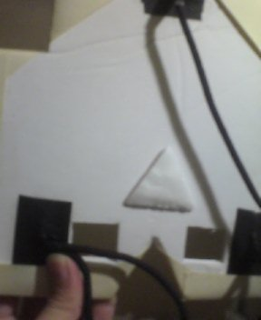
面の裏を見ると、微妙に「鼻ガード」がついている。
美術担当の心優しさを感じながらも、他方、この程度の鼻ガードではゴムによる垂直抗力の生じせしむる苛烈な力の前には何の効果もないのだ、それはまるでちっぽけな人間が大災害の前には抗いようもなくまったく無力な存在へと変貌するのと同様に……といった苦痛と無力感を、ほかならぬ鼻で感じつつ対局を終えた私であった。
ん、男性プロの紹介がまだ？
あ、そう。
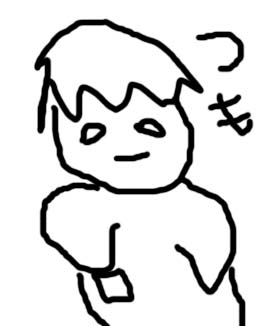
こんな感じのが２名ですよ。
え、よくわからない！？
いや、だいたいこんなもんでしょ？
フィーリングでわかれよ。流れとか感じてよ。
しゃーねーなぁ。
いつもつるんでる麻雀激ウマの、
小林 剛（こばやし ごう）氏
と、
雑誌連載などでも活躍、

貴田 紘太（きだ こうた）氏
でした。
ちなみに貴田氏は医学部出の研修医で、劣等感を感じたのでわざとちょっとブサイク目な写真を掲載しています♪ ← あいかわらず最低でしょ♪
興味をもたれた方は、ぜひネットで彼らの活躍を探してみてくださいね〜〜。
それではお面の中から、さようなら〜（まっとうな人生から永遠に）。
07/08/08
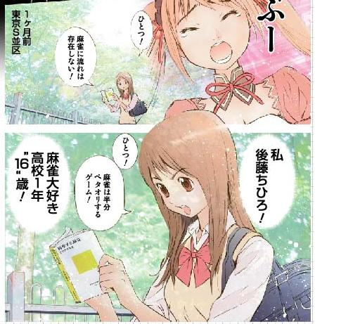
８月１５日発売の「近代麻雀」
『スヰート１６<sweet sixteen>』というマンガに、微妙に『科学する麻雀』が出てくるそうです。
普段キンマを買わない人もぜひに見てみてください。
07/05/27
7月7日（土）エンターテイメントと認知科学研究ステーション（電気通信大学）（http://minerva.cs.uec.ac.jp/~ito/entcog/） にて、「不完全情報ゲーム特集」の中で麻雀研究に関する講演をしてくる予定です。
相変わらずアカデミックさとは無縁の資料で(笑)
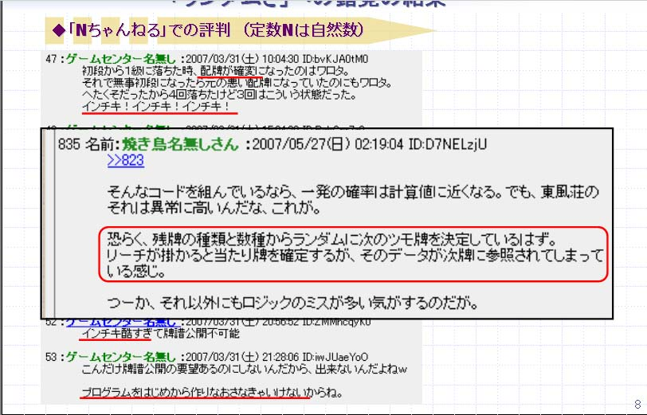
■現在実施中の「読み能力模試」
（/hp/mjcom_research_1.htm）
ですが、現在69名、のべ4410題分（のべ13230回読み分）の回答が集まっています（プロを含む）。
この結果から、人間の読み方の特徴を解明し、より良い読み方をコンピュータを用いて研究しつつあります。この中間報告を上記講演で行うことを予定しています。
■成績の良し悪しはまったく問いません。麻雀研究の発展のため、「読み能力模試」、ふるってご参加ください。
※成績トップ層を除き、個人の成績が個人名等とともに公表されることはありません。
【講演題目】
人間の「読み」を超えろ！ ――「麻雀研究＝情報学」の時代――
【講演概要】
不完全情報ゲーム、こと「ギャンブル」と認識されているゲームにおいては、「読み」や「心理の把握」が、ゲームで勝利するために重要だと考えられている。特に偶然性の高い「麻雀」はその典型であり、これまで科学的な研究の範疇外に放置され続けてきた。
しかし今、情報学的アプローチこそが、麻雀解明への強力な手法となりつつある。これを無視しては、いかなる麻雀戦術を語ることも困難な状況を迎えつつあると言っても、言いすぎではない。
利用履歴（牌譜）の統計処理に基づくモデル構築、コンピュータと人間との「読み能力テスト」の実施結果等を通じて、「読みが重要な麻雀」に対する、情報学の最新アプローチ手法を紹介する。
【講演時間】
90分（質疑応答含む）
07/03/29
明日発売のHobby Japan『GAME JAPAN』2007年５月号に、女流プロとセガのMJ３で対局してきた記事が掲載されます！
女流プロは、杉村えみプロと大澤ふみなプロ！
かわいい写真も載ってますよぅ〜。
「とつげき東北＆東風強豪 VS 女流プロ」
結果はどうなった！？
ちなみに私の連載もあります。
麻雀戦術論考 第12回「必ず不調がやってくる」です。
どうぞこの機会に！
07/03/24
「麻雀論考」と題して、思いつきをたらたらと書いてみてます。
ぜんぜん練られてませんのでよろしく。
07/01/11
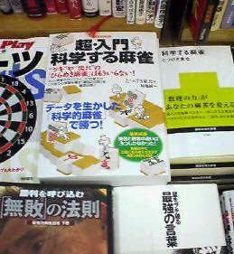
でました。
新宿の紀伊国屋本店に買いにいってみました。
６階の「ギャンブル」のところにありました！
雀鬼の本の近くに『科学する麻雀』と並んで平積みになってました。
本屋では、「趣味」のコーナーにあったり、「ギャンブル」のコーナーにあったり、はたまた新刊のコーナーにあったりと色々です。
恥ずかしくても店員さんに聞きましょう(笑)。
また、本の流通というのは偏るので、街の小さな本屋などにはない可能性が高いです。
注文するか、ネットで購入するのが楽ですね。
07/01/09
本日、某大学にて、「ゲーム情報学」関連の講義をしてきました。
「麻雀の研究」についても若干取り上げてきましたが、メインはついつい大好きなファミコンやらに……。
資料の一部はこちら（PDF）。
あいかわらずタイトルからしてダメだ。何になろうとしているんだおれよ。
06/12/21
できすぎくんの期限を延長しました。
遅くなりまして申し訳ありませんでした。
さて、やっと昨日、１月１１日発売の単行本の原稿を上げました。
最初は「科学する麻雀のカンタン版を作りましょう」という気軽な話だった。
編集の福地さんが全部まとめるので、私はそれの確認をしてくれるだけでいいと。
ところが。
福地さん！ 式の意味すげー間違ったまま書いてるよ！ 全部やり直しやよ！
うわ、オヤジギャグいっぱい入ってる！！ 消して消して！！
という感じで、１冊まるまる、ほとんど私が書き直すハメに・・・。
この２ヶ月、本当に地獄のような日々でした。どんだけ睡眠時間削ってるの。１年くらいは寿命が減ったわ。
いや、いいんですけどね・・・覚悟はしてましたから。
どうせ書き直すのならと、条件を詳細化したり、データを取ったり、新しい論文を入れたり、プロらによる『科学する麻雀』への賛否両論を載せたり、東風最強雀士「＠氷室＠」やプロとの座談会を入れたり、お笑いコラム書いたりとしているうちに、ほぼまったく新規の単行本になりました。
漫画やイラストも盛りだくさんで、とにかく読んでいて楽しい！ そして役立つ！ まじで渾身のできです。
 （Amazonで予約）
（Amazonで予約）
発売が自分でこんなに楽しみな本は、今後もそうは書けないでしょー。
最後の最後、時間に追われて前回みたいなでかい誤植系ミスがあるかもしれない不安をかかえつつ(笑)
06/11/03
うしうし掲示板やっと復旧しました。ご迷惑をおかけしました。
今後とも活発な議論等をお待ちしています。
明日、近麻にも連載をお持ちの福地誠さんと麻雀してくるぞ！！
ていうか、「リアル麻雀」２年ぶりくらいなんですけど。操作法忘れたわ！ Ｂボタンでジャンプやったっけ？
麻雀の結果はここで公開予定〜〜。
じゃが、更新されなかった場合、文句言うな。
凸が負けたと思え。大人の事情をわかれ。
その他情報：
ちょっと最近かなり多忙で、ページの更新などがおろそかになってます。
申し訳ないが、しばらくお待ちを〜〜。
『月刊GameJapan』に『とつげき東北麻雀戦術論考！』を連載中。
この雑誌は、テーブルトークRPGからコンピュータゲーム、カードゲームまで、各種ゲームを網羅的に扱った情報誌です。
マニアックなゲーム好きは必見。
06/09/05
前々からお知らせしていたとおり、今日はめんたいこを買いに九州まで行ってまいりました！
いや〜、からいね。まじで。ハバネロとか最強。
でもさ〜、日持ちしなさそうなので、これをあと５本、今から食わないとダメなの……！？
まじ？
ねぇ、まじ？
考え直して！！！
役人風に言うと「再検討されたい」。
からっ！！！！！！！！！！！！！
３本目でかなり飽きてきたんだけど！！！
役人風に言うと「めんたいこの短期的大量消費においては、３本目以降に倦怠感が生ずると思料」。
朝６時くらいに起きて、飛行機で福岡へ。
で、だーここさんに福岡大学へ車で送ってもらった。
そしてめでたくめんたいこを買い、夜７時５０分には福岡発。
ん……何か忘れてねぇ！？
そうだ！
情報科学技術フォーラムのイベント企画にも行ったんだった！
司会「九州工業大で囲碁の研究を進めていらっしゃる○○さんです、ではお願いします」
○○「ご紹介にあずかりました、○○です」
とか他の先生方がやってらっしゃる中で、
司会「え〜麻雀の研究をされている、……その……、とつげき東北さんです」
凸「え〜と……ご紹介にあずかりました、え〜……、とつげき東北、です……」
（どっ）
名前のみで笑うなてめーらぁぁ！！！！！！！！！！！
最初なんとなくゴロで名前決めちゃったことを、今後悔してんだよ！！
失って初めて気づいてるんだよ！！
差別反対！
しかし、あいかわらず、こういうイベントは楽しいね。
他の先生方の研究とか、普通に観客気分でメモ取ったりして聞いちゃってたわ〜。
資料の一部をのせときますね〜。
こちら。
学会の発表で顔文字とか使って、死んだ方がいいのかな(＾−＾)
06/09/04
『科学する麻雀』講談社現代新書 ９刷！！！
今回も講談社からは連絡も報告もなし(￣ロ￣；)！また！
通帳に記帳して初めて気づくシステム・・・モリッシーめ。
と、本の売れ行きも好調で、麻雀の方もひさびさに2100に……なったと思ったら、こちらはすぐにまた下がった(￣ε￣||)
さて明日は、第５回情報科学技術フォーラム「ゲーム情報学の新しい形」で発表してきますよ〜。
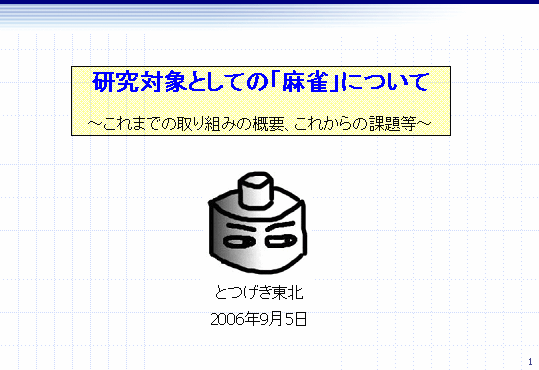
学会の発表で、いきなりこんな名前、こんな絵でいいのおおぉぉぉ！？
06/08/13
麻雀関係の最近の活動。
Hobby Japanの『月刊GAME JAPAN』に『とつげき東北麻雀戦術論考！』連載中！
インターネット麻雀専門誌『麻雀＠』に小林
剛プロと共同連載中！（本文は小林プロ）
ぜひ機会があれば手にとってみてね〜。
あとは単行本のネタになりそうな原稿とか、そのための研究など、日々色々やってます。あぁ時間たりねぇ。
さて、昨年のゲーム情報処理学会ワークショップ招待講演に引き続き、９月５日、福岡にて電子情報通信学会・情報処理学会主催の第5回情報科学技術フォーラムに招かれたため、麻雀の科学について熱く討論してきます。
こちら。
ゲーム情報学の新しい形、ということで、
「ゲーム情報学の次のターゲットは？ 〜チェス、将棋、その次は？〜」
という議題の中、以下のメンバーでパネル討論。
司会：伊藤 毅志（電気通信大学）趣旨説明約10分
松原 仁（はこだて未来大学）コンピュータ将棋の歴史現状 15分
中村 貞吾（九州工業大学） コンピュータ囲碁の現状 15分
大橋 健（九州工業大学） ロボカップの試みと課題 15分
とつげき 東北（麻雀研究家） 麻雀を統計的、科学的に研究する試み 15分
討論 50分
うわ「とつげき東北」が「とつげき 東北」に分解されてる〜！
それだけはやめろとあれほどぉぉぉお
06/08/11
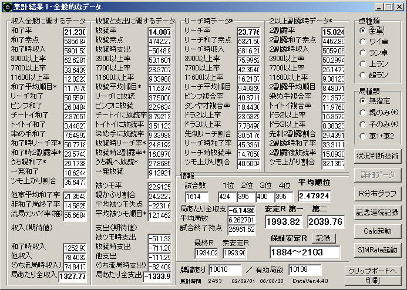
2002年9月から2006年6月末までの成績。
1614試合の間、リーチ和了率が45％ちょいで非常に苦労しました（・・､）
良形待ち割合は他家より多いんですが、追っかけ・追っかけられともにだけど、特に追っかけられ時の和了率・放縦率が恐ろしく悪かったとです。
ッハァア――？ 麻雀って何。
麻雀の定義があなたと違いますから議論がかみ合わないのですね。
とか一人でぶつぶつ言いながら打ってました。
みかけＲも、この1614試合のうち680試合ほど2000切ってましたわ。
最低で1923ですよ1923、ネェあんたちょっと聞いてる！？
２ちゃんねるで「凸もそろそろ超ラン落ちだなｗｗｗ」などと書かれるならまだ救いようもあるが、そもそも誰も何も反応しないほどに。
「お互い待ちを教え合おうな」みたいな契約するぞボケ！
最近ひさびさにシコシコと打っていたら、割と流れがきてるようです。
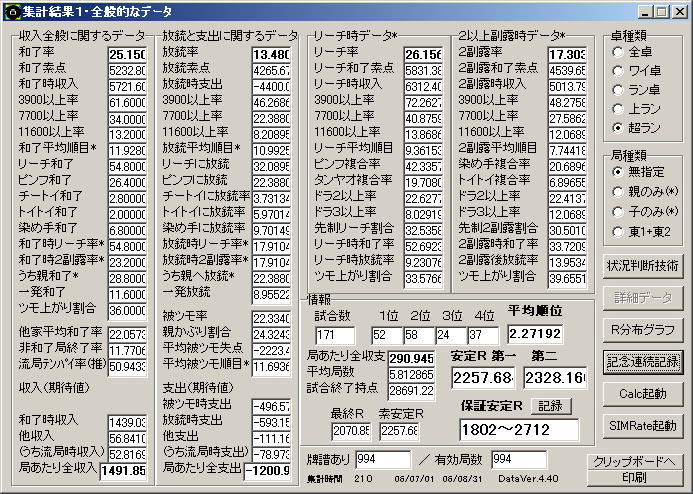
ウハハハハ、運のみマンセー！！
職務の忙しさと執筆関係の連載等もあいまってあまり打てませんが、気分よく打てる時期に、できるだけちょくちょく打つようにします(笑)
06/05/30
『月刊GameJapan第２号』（発売中！）に『とつげき東北麻雀戦術論考！』を連載中。
こんなやつね。
あああ〜〜このヘタ字を見るたびに、小学校低学年の書道の時間に、とても上手に「人学」と書いてしまったことを思い出すぜ・・・。
そう、周りの生徒は皆、「入学」と書いていたのである。
06/05/10
『科学する麻雀』ついに８刷までいきました！！
いつもできすぎくんを使ってくれて、麻雀が大好きなみなさまのおかげです。
ほんとにありがとう。
ていうか。
初めての増刷の時の講談社現代新書編集者の言葉「増刷です！！！ おめでとうございます！！！」
３刷目「とつさん、３刷ですよ！！！ ほんとうにおめでとうございます！ そしてありがとうございます！！」
・・・
６刷目「とつさん、おめでとうです！」
７刷目「また増刷されました。おめでとうです〜」
今回。
何の連絡もなく金が通帳に振り込まれているのみ。
死んだらいいじゃん( ´▽`)
06/04/23
こんにちは。
『月刊GameJapan第１号』（４月２８日第一号発売）から、『とつげき東北麻雀戦術論考！』の連載を開始します。
っていうか、何その無名雑誌は！？
……とお思いでしょうが、ボードゲームをメインにゲーム関係を扱った雑誌ということで、部数もそこそこあるようです。
何より、雑誌がキレイ（カラー絵含めて、情報満載）なのがいいね。
昔からこういう雑誌が好きだったオタクの私としてはうれしい限り。
ん〜この字のドヘタさもまあ……悪くないでしょう。
…ドヘタ！
……いや。
ドヘタクソ！
お前リーのみイーシャンテンから親リーチにつっぱっていくガキかよ。
もうちょっときれいなデザインにしろよ！！！
というか、背景にある「Mode=」とか「AvailableFunction」とやらの、インチキプログラムっぽいデザインがうざいね(笑)
06/04/09
どうも、とつげき東北です〜。
そこ、石投げないように。
いわんやハリセンボンをや。
確かに今回もまたバージョンアップに時間かかってしまいましたよ・・・。
お待たせしてすみませんでした。
使用期間を延ばさなければならないことはわかっていましたが、面倒くさくて現実逃避し、
「こい！ 更新こい！！ まだなの！？」
とまるで他人事のように思ってました。
祈り通じないモンですな・・・かなり流れ悪かったようで。
まぁ、お金とかくれたら早くできそうなんですが←
「できすぎくん」を起動する際に、最新ニュースや宣伝（＾＾；）などの提供ができるように、ＩＥでページを開くようにしてみました。
鬱陶しいかもしれませんが、ものは試しということで。
最近の話題として、4月8日発売の「近代麻雀オリジナル」に原稿を書きました。
「日本麻雀戦術変遷史」というコーナーのうちの１項目を。
みかけたら立ち読むなり、買うなりしてみてください。
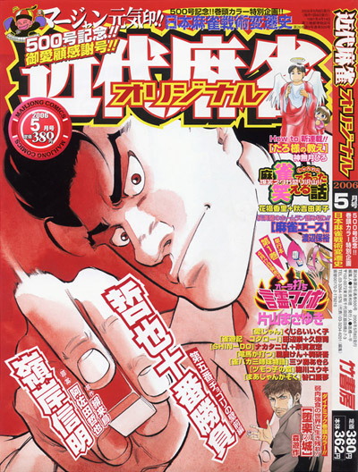
っておい！？
表紙に「とつげき東北」って名前すら載らねぇの！？
立ち読みでええわこんなもん。
今回実は、原稿を載せるにあたり、自分の職場での許可を取っておらず、なんと「無償」なんですね。
竹書房から依頼がきたのが３月上旬。
いきなり「３月２３日が締め切りです。原稿をお願いします」などという依頼がきたのだった。
で、原稿を書いて、「今回は無償提供とさせてください」と申し出たところ、「了解しました」と快諾。しかもなんかえらそうじゃね！？
（他の雑誌社に、同じような状況で無償提供を切り出したときは、「それではいけません」「なんとか対価を支払わせていただけませんか」と言ってきた）
竹よ。もっと大切にしろ、色々(笑)
とは言え、せっかくだから、できれば買ってあげてくださいね〜